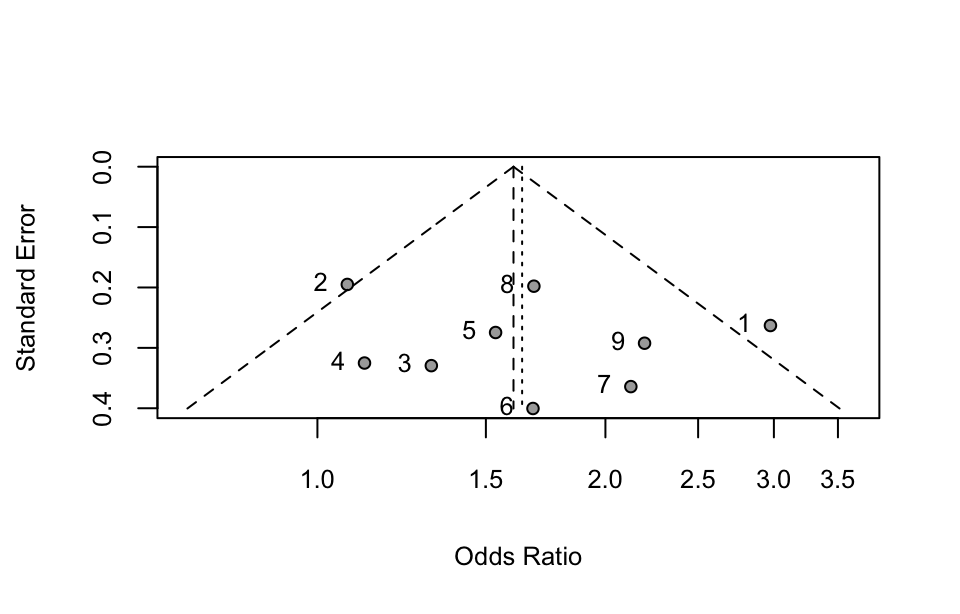

library(tidyverse)
library(metafor)
library(meta)31 Meta analysis
Meta-analysis is a statistical technique used to combine results from multiple studies on the same topic, often in medicine or psychology to achieve a more accurate and comprehensive conclusion. By aggregating findings, meta-analysis allows researchers to identify patterns, assess overall effects, and make generalizations that may be more robust than results from any single study.
31.1 Prerequisite
31.2 Introduction to meta-analysis
Meta-analysis offers a comprehensive overview of a particular research question by quantitatively integrating data from individual studies. By pooling results, meta-analysis enhances statistical power and provides a more precise estimate of the overall effect.
31.2.1 Steps in a meta-analysis
Below are the key steps involved in conducting a meta-analysis, outlining a systematic approach that ensures reliability and rigor.
1. Formulating the research question and defining inclusion criteria
The process begins by formulating a clear and focused research question. This typically includes specifying the population, intervention, comparison, and outcomes (PICO) of interest. Next, inclusion and exclusion criteria are established to determine which studies are relevant to the meta-analysis. These criteria may be based on study design, population characteristics, type of intervention, and outcome measures. Clear criteria at the outset help ensure consistency and relevance throughout the analysis.
2. Conducting a comprehensive literature search
A thorough literature search is conducted across relevant databases (such as PubMed, Cochrane Library, PsycINFO, and Google Scholar) to identify all studies that meet the inclusion criteria. Grey literature, including unpublished studies, dissertations, and conference abstracts, is also reviewed to reduce publication bias. Every search strategy and its outcomes are documented to provide transparency in the search process.
3. Screening studies and assessing eligibility
After collecting potential studies, an initial screening of titles and abstracts is performed to identify eligible studies. Full-text reviews follow for studies that pass the initial screen, applying inclusion and exclusion criteria rigorously. Throughout this stage, it’s essential to maintain a record of excluded studies along with the reasons for their exclusion.
4. Extracting data
Data extraction entails gathering key information from each study, such as sample sizes, effect sizes, standard deviations, p-values, and any other relevant characteristics. A structured data extraction form helps ensure accuracy and consistency. This step may also involve collecting study design information and indicators of study quality to support subsequent analyses.
5. Assessing study quality and risk of bias
Study quality and risk of bias are evaluated to assess the reliability of each included study. Standard tools such as the Cochrane risk of bias tool (for randomized trials) or the Newcastle-Ottawa scale (for observational studies) are commonly used for this purpose. Evaluating study quality helps interpret the results accurately, highlighting potential sources of bias that may affect the analysis.
6. Selecting a meta-analytic model
The fixed-effect model assumes that all studies share the same true effect size. A weighted average is calculated using weights that are the inverse of the standard error. The fixed-effect model is appropriate when heterogeneity among studies is low. The random-effects model assumes study-specific effect sizes vary randomly around a mean effect, which may arise from differences in populations, interventions, or conditions. The weighting incorporates both within-study and between-study variance.
If heterogeneity is substantial (e.g., I² > 50%), the random-effects model is typically chosen. A random-effects model is often preferred for meta-analyses as it allows for generalizing results across varied studies.
7. Calculating effect sizes
Each study’s effect size is calculated and standardized to allow for consistent comparisons across studies. Effect sizes such as Cohen’s d (for continuous outcomes), odds ratios or relative risk, or correlation coefficients (for correlational studies) are common choices. These effect sizes, along with their variances, are essential for combining study results in the next steps.
8. Pooling results
The calculated effect sizes are then pooled to obtain an overall effect estimate. Statistical software can be used to perform this pooling, applying weights based on study precision or sample size, giving greater influence to more reliable studies. This pooling provides a summary effect size that reflects the cumulative evidence across studies.
9. Assessing heterogeneity
Heterogeneity, or the variation in study outcomes, is assessed using statistical tests. Cochran’s Q test determines if variability is likely due to chance, while the I² statistic quantifies the proportion of variability due to heterogeneity rather than random error. High heterogeneity suggests differences in study populations, interventions, or methodologies, indicating a need for further investigation or subgroup analysis.
A large Q and a p-value < 0.05 suggest significant heterogeneity. An I² of 0-40% suggests low heterogeneity, 30-60% moderate, 50-90% substantial, and 75-100% considerable heterogeneity.
10. Checking for publication bias
Publication bias is assessed to ensure that the meta-analysis results are not skewed by the absence of unpublished or null-result studies. Funnel plots visually display asymmetry, indicating potential bias, while statistical tests like Egger’s test further evaluate its likelihood. Addressing publication bias strengthens the validity of the results.
11. Performing sensitivity and subgroup analyses
Sensitivity analyses test the robustness of the results by excluding certain studies (e.g., high-risk studies or outliers) to evaluate their influence on the overall findings. Subgroup analyses examine differences in effects across categories, such as age, gender, or intervention type, providing insights into how study characteristics may impact results.
12. Interpreting results
The results of the meta-analysis are interpreted with attention to the effect size, confidence intervals, heterogeneity, and potential biases. The overall significance of the findings is discussed, and the practical implications of the effect size are considered, not just its statistical significance. Any limitations of the analysis are also acknowledged.
13. Reporting findings
A final report or publication is prepared, summarizing the research question, methodology, results, and conclusions. Following guidelines such as PRISMA (Preferred Reporting Items for Systematic Reviews and Meta-Analyses) ensures a transparent and complete presentation. This report allows others to understand, evaluate, and replicate the findings, further enhancing the impact of the meta-analysis.
In conclusion, a well-conducted meta-analysis offers valuable insights by systematically integrating findings from multiple studies. Through careful planning and rigorous methodology, it provides a powerful tool for synthesizing evidence, informing practice, and guiding future research.
31.2.2 R packages
There are several packages in R that facilitate meta-analysis. The meta is a comprehensive package for conducting meta-analyses, including fixed- and random-effects models, subgroup analysis, and meta-regression. The metafor offers advanced functionalities, including different effect size calculations, mixed-effects models, and meta-regression. The robumeta supports robust variance estimation for meta-analyses where there are dependent effect sizes.
31.3 Pooling odds ratios
Pooling odds ratios is a common approach in meta-analysis, especially for binary outcomes in case-control studies. The process involves selecting effect sizes, here is odds rations, testing for heterogeneity, choosing an appropriate model, and calculating a combined effect size.
For each study, calculate the odds ratio between the case and control groups, which reflects the association strength between exposure and outcome.
\text{OR} = \frac{\text{odds of event in exposed group}}{\text{odds of event in control group}} = \frac{\frac{a}{b}}{\frac{c}{d}} = \frac{a \cdot d}{b \cdot c}
where a is the number of cases with exposure and outcome, b is the number of cases with exposure but no outcome, c is the number of cases without exposure but with outcome, d is the number of cases without exposure and without outcome.
For ease in calculations and to meet normality assumptions, the OR is transformed to its natural logarithm, resulting in a log OR. Calculate the standard error for the log OR as well.
Example 1
Perform a meta-analysis on the 9 case-control studies of the relationship between extremely low-frequency electromagnetic fields and childhood leukemia in Table 31.1 .
df <- read_csv("datasets/ex31-01.csv", show_col_types = F) |>
mutate(id = c(1:9), .before = 1)
df |> knitr::kable(align = "c")| id | a | b | c | d |
|---|---|---|---|---|
| 1 | 63 | 92 | 29 | 126 |
| 2 | 103 | 95 | 113 | 112 |
| 3 | 25 | 218 | 17 | 195 |
| 4 | 18 | 162 | 25 | 252 |
| 5 | 27 | 70 | 52 | 207 |
| 6 | 14 | 70 | 15 | 126 |
| 7 | 29 | 52 | 16 | 61 |
| 8 | 122 | 89 | 92 | 113 |
| 9 | 49 | 55 | 30 | 74 |
31.3.1 metafor package
The metafor package can be used for OR pooling. Here we use the escalc() function to calculate the log odds ratios and their standard errors from the data.
dat <- escalc(measure = "OR", ai = a, bi = b, ci = c, di = d, data = df)
dat#>
#> id a b c d yi vi
#> 1 1 63 92 29 126 1.0903 0.0692
#> 2 2 103 95 113 112 0.0720 0.0380
#> 3 3 25 218 17 195 0.2742 0.1085
#> 4 4 18 162 25 252 0.1133 0.1057
#> 5 5 27 70 52 207 0.4288 0.0754
#> 6 6 14 70 15 126 0.5188 0.1603
#> 7 7 29 52 16 61 0.7543 0.1326
#> 8 8 122 89 92 113 0.5210 0.0392
#> 9 9 49 55 30 74 0.7874 0.0854This function calculates various effect sizes or outcome measures (with argument measure = "OR") and the corresponding sampling variances that are commonly used in meta-analysis.
Then use the rma() function to conduct a meta-analysis. You can choose a fixed-effects model (method="FE") or a random-effects model (e.g. method="REML").
res <- rma(yi, vi, data = dat, slab = 1:nrow(dat), method = "FE")
res |> summary()#>
#> Fixed-Effects Model (k = 9)
#>
#> logLik deviance AIC BIC AICc
#> -3.5880 13.1805 9.1760 9.3732 9.7474
#>
#> I^2 (total heterogeneity / total variability): 39.30%
#> H^2 (total variability / sampling variability): 1.65
#>
#> Test for Heterogeneity:
#> Q(df = 8) = 13.1805, p-val = 0.1058
#>
#> Model Results:
#>
#> estimate se zval pval ci.lb ci.ub
#> 0.4719 0.0899 5.2494 <.0001 0.2957 0.6481 ***
#>
#> ---
#> Signif. codes: 0 '***' 0.001 '**' 0.01 '*' 0.05 '.' 0.1 ' ' 1Here’s a breakdown of the meta-analysis results using the metafor package:
Model summary:
- Model type: A fixed-effects model was used, based on data from 9 studies (k = 9).
- Log likelihood and deviance
- logLik: -3.5880 – the log likelihood of the model.
- Deviance: 13.1805 – measures the goodness of fit, where lower deviance values indicate better fit.
- AIC (Akaike Information Criterion): 9.1760 – a measure for model comparison, where lower values are generally preferred.
- BIC (Bayesian Information Criterion): 9.3732 – similar to AIC but penalizes model complexity more, with lower values indicating better fit.
- AICc: 9.7474 – a corrected AIC value for small sample sizes.
Heterogeneity assessment:
- I² (39.30%): This indicates that approximately 39.3% of the total variability in effect sizes is due to heterogeneity (differences between studies) rather than sampling error. This value suggests some moderate heterogeneity across studies.
- H² (1.65): Reflects the ratio of total variability to sampling variability. A value of 1.65 indicates that the total variability is moderately higher than sampling variability, which aligns with the I² result.
- Test for heterogeneity: Q-statistic: 13.1805, with a p-value of 0.1058. Since the p-value is above 0.05, there isn’t statistically significant evidence of heterogeneity among studies. This suggests that the studies’ effect sizes are relatively similar.
Model results:
- Estimate: 0.4719 – This is the log odds ratio, indicating the overall estimated effect across studies.
- Standard Error (SE): 0.0899 – Measures the precision of the overall estimate. Lower SE values indicate more precise estimates.
- z-value: 5.2494 – Measures the significance of the estimate. A high z-value indicates a strong effect.
- p-value: < 0.0001 – This is highly significant, meaning that the overall effect is statistically significant.
- 95% Confidence interval (CI): [0.2957, 0.6481] – The interval suggests that the true log odds ratio lies between 0.2957 and 0.6481 with 95% confidence.
Given the highly significant p-value and positive confidence interval bounds, this suggests a positive effect, with evidence that there is a statistically significant association or effect size across the studies analyzed.
You can create a forest plot to visualize individual and overall effect sizes and confidence intervals.
forest(
res, atransf= exp, addpred = T, refline = 0, xlab = "Odds Ratio",
cex = 0.8, col = "blue", border = "blue", mlab = "Pooling",
header = c("Study", "OR [95% CI]"), ilab = cbind(a, b, c, d),
ilab.xpos = c(-3.1,-2.7,-2.3,-1.9), shade="zebra")
text(c(-3.1,-2.7,-2.3,-1.9), 11, c("a", "b", "c", "d"), cex = 0.9, font=2)Interpreting the forest plot:
- Individual studies: Each row represents a study, with the study’s effect size and confidence interval displayed as a horizontal line.
- Overall effect: The diamond shape at the bottom shows the pooled effect size from the meta-analysis.
- Line of no effect: This is often set to 1 for odds ratios (or 0 for mean differences). Points that cross this line are not statistically significant individually.
The pooled OR indicates the overall risk in the exposed group relative to the control group. If OR > 1, the exposure is associated with a higher risk; if OR < 1, it’s associated with a lower risk. Results are statistically significant if the confidence interval does not include 1.
To create a funnel plot, you can use the funnel() function on your meta-analysis model object. The funnel plot helps to visually assess publication bias by plotting each study’s effect size against its standard error.
funnel(
res, yaxis = "sei", pch = 1, label = T, legend = F, cex = 0.8,
cex.axis = 0.8, cex.lab = 0.8, atransf= exp, xlab = "Odds Ratio")Interpreting the funnel plot:
- Symmetry: In a funnel plot, symmetric patterns (a balanced “inverted funnel” shape) typically indicate low publication bias.
- Asymmetry: If the plot is asymmetric, with more studies clustered on one side, it might suggest the presence of publication bias or small-study effects.
- Scatter: Points closer to the top of the funnel (representing studies with smaller standard errors and larger sample sizes) tend to be more concentrated around the overall effect estimate, while points further down (with larger standard errors) are expected to be more spread out.
If you notice asymmetry in your funnel plot, you may consider conducting further statistical tests for publication bias, such as Egger’s test or the trim-and-fill method.
31.3.2 meta package
The meta package is widely used for conducting meta-analysis, offering a variety of functions to analyze different types of data, such as binary data and continuous data. The metabin() function is used for binary (event/non-event) data, allowing estimation of odds ratio (OR), risk ratio (RR), or risk difference (RD).
res <- metabin(
event.e = a, n.e = a + b, event.c = c, n.c = c + d,
sm = "OR", method = "Inverse", data = df, studlab = id)
summary(res)#> OR 95%-CI %W(common) %W(random)
#> 1 2.9753 [1.7769; 4.9817] 11.7 12.1
#> 2 1.0746 [0.7333; 1.5748] 21.3 16.2
#> 3 1.3154 [0.6897; 2.5090] 7.4 9.2
#> 4 1.1200 [0.5922; 2.1181] 7.6 9.3
#> 5 1.5354 [0.8964; 2.6299] 10.7 11.5
#> 6 1.6800 [0.7665; 3.6824] 5.0 6.9
#> 7 2.1262 [1.0414; 4.3408] 6.1 8.0
#> 8 1.6837 [1.1424; 2.4813] 20.6 16.0
#> 9 2.1976 [1.2392; 3.8971] 9.5 10.7
#>
#> Number of studies: k = 9
#> Number of observations: o = 3008 (o.e = 1353, o.c = 1655)
#> Number of events: e = 839
#>
#> OR 95%-CI z p-value
#> Common effect model 1.6031 [1.3441; 1.9120] 5.25 < 0.0001
#> Random effects model 1.6367 [1.2891; 2.0781] 4.04 < 0.0001
#>
#> Quantifying heterogeneity (with 95%-CIs):
#> tau^2 = 0.0534 [0.0000; 0.3306]; tau = 0.2310 [0.0000; 0.5750]
#> I^2 = 39.3% [0.0%; 72.1%]; H = 1.28 [1.00; 1.89]
#>
#> Test of heterogeneity:
#> Q d.f. p-value
#> 13.18 8 0.1058
#>
#> Details of meta-analysis methods:
#> - Inverse variance method
#> - Restricted maximum-likelihood estimator for tau^2
#> - Q-Profile method for confidence interval of tau^2 and tau
#> - Calculation of I^2 based on QThe forest plot is commonly used in meta-analysis to display the effect size of each study along with the overall effect size.
forest(
res, layout = "RevMan5", random = F, common = T, prediction = T,
text.predict = "Prediction CI", pooled.events = T, pooled.totals = T,
xlab = "Odds Ratio", ref = 1, header.line = "below", details = T,
fontsize = 10, fs.details = 8, squaresize = 0.5, colgap = "2mm",
just = "center", just.studlab = "center", col.diamond.common = "red")A funnel plot is used to assess publication bias. A symmetric funnel plot suggests low publication bias, whereas asymmetry indicates potential bias.
funnel(
res, type = "standard", cex = 0.8, cex.lab = 0.8,
cex.axis = 0.8, studlab = T)
31.4 pooling risk difference
Pooling risk difference is commonly used in meta-analysis to summarize the absolute effect of an intervention across various study populations. The risk difference itself measures the absolute difference in the probability of an event occurring between two groups, often an intervention group and a control group.
The risk difference (RD), also known as the absolute risk reduction, is calculated as the difference between the event rates (probabilities of an outcome) in two groups: the intervention group and the control group. This can be further expressed as:
\text{RD} = \frac{a}{a + b} - \frac{c}{c + d}
where ais the number of events in the intervention group, b is the number of non-events in the intervention group, c is the number of events in the control group, and d is the number of non-events in the control group.
RD > 0 indicates a higher risk (or probability of the event) in the intervention group than in the control group. RD < 0 indicates a lower risk in the intervention group than in the control group. RD = 0 suggests no difference in risk between the two groups. For example, if RD = 0.10 (or 10%), it suggests that the intervention group has a 10% higher absolute event rate compared to the control group.
Example 2
To investigate the efficacy of domestic ranitidine in treating peptic ulcers, four randomized controlled trials meeting the criteria were collected. Cimetidine was used as the control drug, and the study results are shown in Table 31.2 . Please perform a meta-analysis to combine the difference in ulcer healing rates between domestic ranitidine and the control drug.
df <- read_csv("datasets/ex31-02.csv", show_col_types = F) |>
mutate(id = c(1:4), .before = 1)
df |> knitr::kable(align = "c")| id | n1 | p1 | n2 | p2 |
|---|---|---|---|---|
| 1 | 7 | 1.0000 | 14 | 0.9286 |
| 2 | 36 | 0.8333 | 25 | 0.8000 |
| 3 | 62 | 0.8710 | 64 | 0.6875 |
| 4 | 32 | 0.7813 | 26 | 0.6923 |
To perform pooling of risk differences, you can use the metabin() function from the meta package, specifying sm = "RD":
res <- metabin(
event.e = p1 * n1, n.e = n1, event.c = p2 * n2, n.c = n2,
sm = "RD", method = "Inverse", data = df, studlab = id)
res |> summary()#> RD 95%-CI %W(common) %W(random)
#> 1 0.0714 [-0.1548; 0.2976] 17.1 17.1
#> 2 0.0333 [-0.1652; 0.2318] 22.2 22.2
#> 3 0.1835 [ 0.0426; 0.3244] 44.0 44.0
#> 4 0.0890 [-0.1390; 0.3170] 16.8 16.8
#>
#> Number of studies: k = 4
#> Number of observations: o = 266 (o.e = 137, o.c = 129)
#> Number of events: e = 211.0026
#>
#> RD 95%-CI z p-value
#> Common effect model 0.1152 [0.0218; 0.2087] 2.42 0.0157
#> Random effects model 0.1152 [0.0218; 0.2087] 2.42 0.0157
#>
#> Quantifying heterogeneity (with 95%-CIs):
#> tau^2 = 0 [0.0000; 0.0496]; tau = 0 [0.0000; 0.2227]
#> I^2 = 0.0% [0.0%; 84.7%]; H = 1.00 [1.00; 2.56]
#>
#> Test of heterogeneity:
#> Q d.f. p-value
#> 1.75 3 0.6257
#>
#> Details of meta-analysis methods:
#> - Inverse variance method
#> - Restricted maximum-likelihood estimator for tau^2
#> - Q-Profile method for confidence interval of tau^2 and tau
#> - Calculation of I^2 based on Q
#> - Continuity correction of 0.5 in studies with zero cell frequenciesforest(
res, layout = "RevMan5", random = F, common = T, prediction = T,
text.predict = "Prediction CI", pooled.events = T, pooled.totals = T,
xlab = "Odds Ratio", ref = 1, header.line = "below", details = T,
fontsize = 10, fs.details = 8, squaresize = 0.5, colgap = "2mm",
just = "center", just.studlab = "center", col.diamond.common = "red")funnel(
res, type = "standard", cex = 0.8, pch = 1, cex.lab = 0.8,
cex.axis = 0.8, studlab = T, pos.studlab = 3)